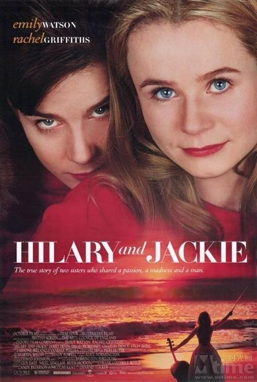
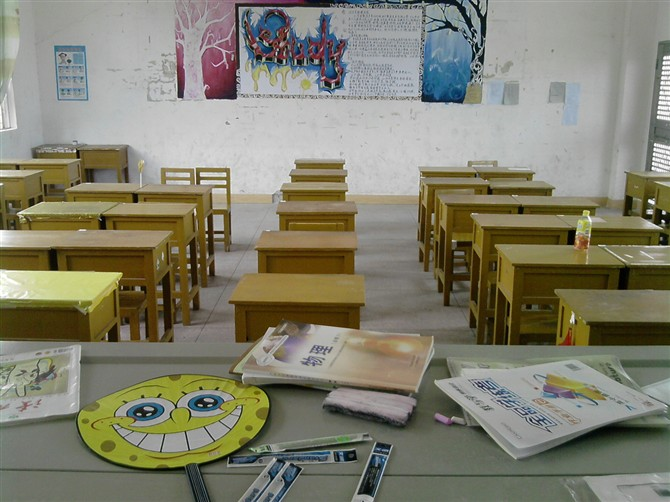
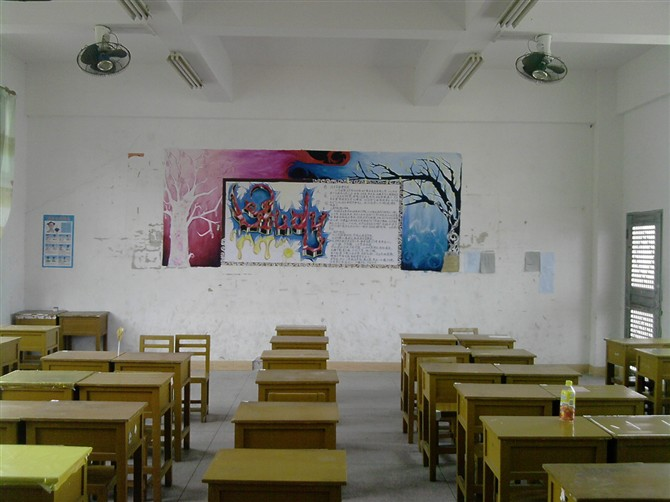
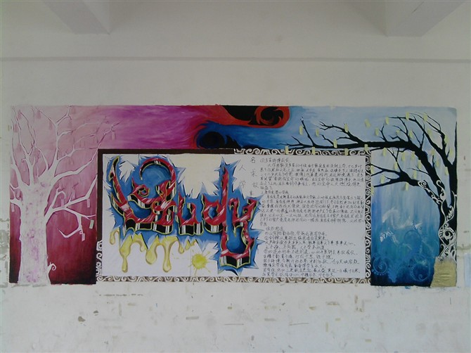
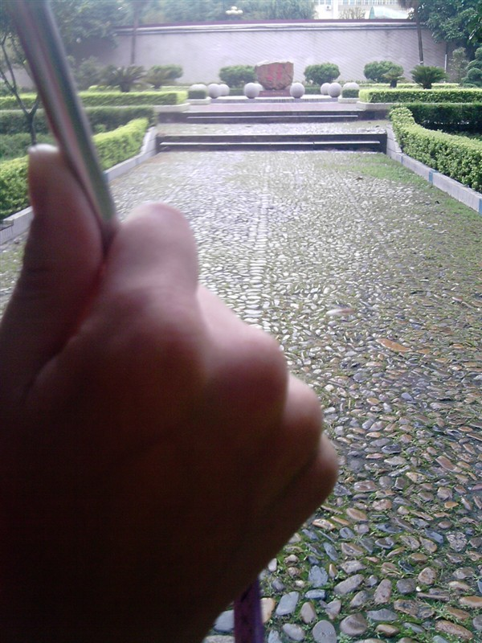
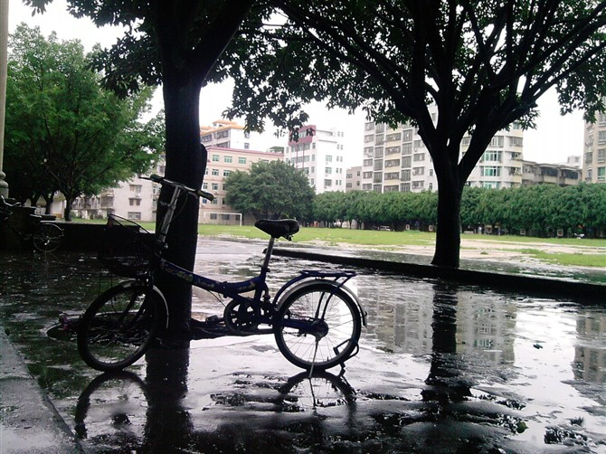

她比烟花寂寞
今晚独自看完了这部影片，不知道要有怎样的智慧，才能把《HilaryandJackie》这样的片名译成《她比烟花寂寞》。
噢，我不会写观后感，不过讲述的就是一个杰出的大提琴家最后死掉的故事。
这是安妮宝贝写的：
电影海报设计成凝重的红色。两个亲密依偎的女孩。一头金发的Jackie有着不羁的眼神和笑容。而躲在她背后的Hilary看过去是隐忍的。
一对姐妹，从小情深如海。长大后，渐渐走上不同的道路。
Jackie因为惊人的音乐天分，开始演奏大提琴的漂泊生涯。盛名背后，隐藏无尽空虚。而姐姐Hilary放弃了她吹横笛的机会，嫁了心爱的男人，甘心在乡下过平淡幸福的家庭生活。
Jackie深爱着Hilary，却注定要四处漂泊。姐姐嫁人以后，Jackie想和姐姐一起过单纯的生活，也想分享她的男人。结果三个人因为深爱而软弱，又因为软弱而痛苦。Jackie只有黯然离去。
最后Jackie因为长期的颠沛流离，患病而死。
她的这段话我有些不是很苟同，至少我认为Jackie不是因为颠沛流离才死的…

之前在电视上看到这一个故事：
一个小女孩在小的时候被母亲抛弃，而在内心留下了阴影。
在她长大后，有一次她的丈夫生病发烧，她却只是毫不在乎地对他说：你就躺在这吧，我先走了。
她这次要先抛弃别人，但内心却希望他能够挽回她。只要他挽回就能中和在她幼龄时被母亲遗弃的伤痛。但没有人能承受别人这样的对待，最终他的丈夫还是离开了她。最终，这个女孩始终处于抛弃与被抛弃中..
她的一生一直处于抛弃与被抛弃中，她用抛弃来伤害别人，其实终究还是她自己被抛弃了。
高一结束了，周围的人都在结束的时候告别一些东西。
鞠个躬，告别高一，告别那个教室，告别那个宿舍，告别那些热闹的人和事…





自从小样离开我虽然知道他只是离开一个月，始终会回来的却是变得彻底没有安全感。很多很多事一直不断侵占腐蚀我的大脑。甚至打了个电话没人接发了短信没人回居然都能让我痛哭
我想我不曾有哪个暑假过得那么矫情，翻来覆去，一面哭一面睡…
这两天我就是这么过来的，除了一如既往的挣扎在起床与不起床间，洗澡与不洗澡间，踩蟑螂跟懒得踩蟑螂间，最多的就是备好面巾纸坐在电脑前看电影电视剧…
边看边抹眼泪边看边抹….抹眼泪的动作起伏大，情绪波动大…
不由得摇摇头曰：更年期更年期！